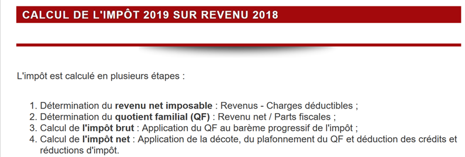

8. Application exercise – version 1
8.1. The problem
The table above allows us to calculate the tax in the simplified case of a taxpayer who has only their salary to report. As indicated in note (1), the tax calculated this way is the tax before three mechanisms:
- the family quotient cap, which applies to high incomes;
- the tax credit and tax reduction that apply to low incomes;
Thus, the tax calculation involves the following steps [http://impotsurlerevenu.org/comprendre-le-calcul-de-l-impot/1217-calcul-de-l-impot-2019.php]:

We propose to write a program to calculate a taxpayer’s tax in the simplified case of a taxpayer who has only their salary to report:
8.1.1. Calculation of Gross Tax
The gross tax can be calculated as follows:
First, we calculate the taxpayer’s number of shares:
- Each parent contributes 1 share;
- the first two children each contribute 1/2 share;
- subsequent children each contribute one share:
The number of shares is therefore:
- nbParts=1+nbChildren*0.5+(nbChildren-2)*0.5 if the employee is unmarried;
- nbParts=2+nbChildren*0.5+(nbChildren-2)*0.5 if they are married;
- where nbChildren is the number of children;
- we calculate the taxable income R = 0.9 * S, where S is the annual salary;
- The family quotient QF is calculated as QF = R / nbParts;
- We calculate the gross tax I based on the following data (2019):
9964 | 0 | 0 |
27,519 | 0.14 | 1,394.96 |
73,779 | 0.3 | 5,798 |
156,244 | 0.4 | 13,913.69 |
0 | 0.45 | 20163.45 |
Each row has 3 fields: field1, field2, field3. To calculate tax I, we find the first row where QF <= field1 and take the values from that row. For example, for a married employee with two children and an annual salary S of 50,000 euros:
Taxable income: R=0.9*S=45,000
Number of shares: nbParts=2+2*0.5=3
Family quotient: QF = 45,000 / 3 = 15,000
The first row where QF <= field1 is as follows:
Tax I is then equal to 0.14*R – 1394.96*numberOfShares=[0.14*45000-1394.96*3]=2115. The tax is rounded down to the nearest euro.
If the condition QF <= field1 holds in the first row, then the tax is zero.
If QF is such that the condition QF <= field1 is never satisfied, then the coefficients from the last line are used. Here:
which gives the gross tax I = 0.45*R – 20163.45*nbParts.
8.1.2. Family Quotient Cap
To determine whether the family quotient (QF) cap applies, we recalculate the gross tax without the children. Again, for the married employee with two children and an annual salary S of 50,000 euros:
Taxable income: R = 0.9 * S = 45,000
Number of shares: nbParts=2 (children are no longer counted)
Family quotient: QF = 45,000 / 2 = 22,500
The first line where QF <= field1 is as follows:
Tax I is then equal to 0.14*R – 1394.96*number of shares = [0.14*45,000 – 1394.96*2] = 3,510.
Maximum child-related benefit: 1551 * 2 = 3102 euros
Minimum tax: 3,510 – 3,102 = 408 euros
The gross tax with 3 tax brackets, already calculated at 2,115 euros, is higher than the minimum tax of 408 euros, so the family cap does not apply here.
Generally speaking, the gross tax is greater than (tax1, tax2) where:
- [tax1]: is the gross tax calculated including children;
- [tax2]: is the gross tax calculated without children and reduced by the maximum credit (here 1,551 euros per half-share) related to children;
8.1.3. Calculation of the reduction

Still using the example of a married employee with two children and an annual salary S of 50,000 euros:
The gross tax (2,115) from the previous step is less than 2,627 euros for a couple (1,595 euros for a single person): the reduction therefore applies. It is calculated as follows:
discount = threshold (couple = 1,970 / single = 1,196) - 0.75 * gross tax
discount = 1,970 – 0.75 * 2,115 = 383.75, rounded to 384 euros.
New gross tax = 2,115 – 384 = 1,731 euros
8.1.4. Calculation of the tax reduction

Below a certain threshold, a 20% reduction is applied to the gross tax resulting from the previous calculations. In 2019, the thresholds are as follows:
- Single: 21,037 euros;
- couple: 42,074 euros; (the figure 37,968 used in the example above appears to be incorrect);
This threshold is increased by the value: 3,797 * (number of half-shares contributed by the children).
Again, for the married employee with two children and an annual salary S of 50,000 euros:
- his taxable income (45,000 euros) is below the threshold (42,074 + 2 × 3,797) = 49,668 euros;
- he is therefore entitled to a 20% reduction in his tax: 1,731 * 0.2 = 346.2 euros, rounded to 347 euros;
- the taxpayer’s gross tax becomes: 1,731 – 347 = 1,384 euros;
8.1.5. Calculation of Net Tax
Our calculation ends here: the net tax due will be 1,384 euros. In reality, the taxpayer may be eligible for other deductions, particularly for donations to public or general interest organizations.
8.1.6. High-Income Cases
Our previous example applies to the majority of employees. However, the tax calculation differs for high-income earners.
8.1.6.1. Cap on the 10% reduction on annual income
In most cases, taxable income is calculated using the formula: R = 0.9 × S, where S is the annual salary. This is known as the 10% reduction. This reduction is capped. In 2019:
- it cannot exceed 12,502 euros;
- it cannot be less than €437;
Let’s consider the case of an unmarried employee with no children and an annual salary of 200,000 euros:
- the 10% reduction is 200,000 euros > 12,502 euros. It is therefore capped at 12,502 euros;
8.1.6.2. Family Quotient Cap
Let’s consider a case where the family cap described in the section |Family Quotient Cap| applies. Let’s take the case of a couple with three children and an annual income of 100,000 euros. Let’s go through the calculation steps again:
- the 10% deduction is 10,000 euros < 12,502 euros. The taxable income R is therefore 100,000 - 10,000 = 90,000 euros;
- the couple has nbParts = 2 + 0.5 × 2 + 1 = 4 shares;
- their family quotient is therefore QF = R / nbParts = 90,000 / 4 = 22,500 euros;
- their gross tax I1 with children is I1 = 0.14 × 90,000 – 1,394.96 × 4 = 7,020 euros;
- their gross tax I2 without children:
- QF = 90,000 / 2 = 45,000 euros;
- I2 = 0.3 × 90,000 – 5,798 × 2 = 15,404 euros;
- the family quotient cap rule states that the benefit provided by children cannot exceed (1,551 × 4 half-shares) = 6,204 euros. However, here, it is I2 – I1 = 15,404 – 7,020 = 8,384 euros, which is greater than 6,204 euros;
- the gross tax is therefore recalculated as I3 = I2 - 6,204 = 15,404 - 6,204 = 9,200 euros;
This couple will receive neither a tax credit nor a reduction, and their final tax will be 9,200 euros.
8.1.7. Official figures
Calculating taxes is complex. Throughout this document, calculations will be based on the following examples. The results are from the tax authority’s simulator |https://www3.impots.gouv.fr/simulateur/calcul_impot/2019/simplifie/index.htm|:
Taxpayer | Official results | Results from the document’s algorithm |
Couple with 2 children and an annual income of 55,555 euros | Tax = 2,815 euros Tax rate = 14% | Tax = 2,814 euros Tax rate = 14% |
Couple with 2 children and an annual income of 50,000 euros | Tax = 1,385 euros Tax credit = €720 Reduction = 0 euros Tax rate = 14% | Tax = €1,384 Discount = 384 euros Credit=347 euros Tax rate = 14% |
Couple with 3 children and an annual income of 50,000 euros | Tax = 0 euros Tax credit = 384 euros Reduction = 346 euros Tax rate = 14% | Tax = 0 euros Discount=720 euros Deduction=0 euros Tax rate = 14% |
Single with 2 children and an annual income of 100,000 euros | Tax = 19,884 euros Tax credit = 0 euros Deduction = 0 euros Tax rate = 41% | Tax = €19,884 Surcharge = 4,480 euros Discount=0 euros Reduction = 0 euros Tax rate = 41% |
Single with 3 children and an annual income of 100,000 euros | Tax = €16,782 Tax credit=0 euros Deduction = 0 euros Tax rate = 41% | Tax = €16,782 Surcharge = 7,176 euros Discount=0 euros Reduction = 0 euros Tax rate = 41% |
Couple with 3 children and an annual income of 100,000 euros | Tax = €9,200 Tax credit=0 euros Deduction = 0 euros Tax rate = 30% | Tax = €9,200 Surcharge = 2,180 euros Discount=0 euros Reduction = 0 euros Tax rate = 30% |
Couple with 5 children and an annual income of 100,000 euros | Tax = €4,230 Tax credit=0 euros Deduction = 0 euros Tax rate = 14% | Tax = €4,230 Discount = 0 euros Deduction=0 euros Tax rate = 14% |
Single, no children, and annual income of 100,000 euros | Tax = 22,986 euros Tax credit=0 euros Deduction = 0 euros Tax rate = 41% | Tax = 22,986 euros Surcharge = 0 euros Discount = 0 euros Reduction = 0 euros Tax rate = 41% |
Couple with 2 children and an annual income of 30,000 euros | Tax = 0 euros Tax credit=0 euros Deduction = 0 euros Tax rate = 0% | Tax = 0 euros Discount=0 euros Reduction=0 euro Tax rate = 0% |
Single with no children and an annual income of 200,000 euros | Tax = 64,211 euros Tax credit=0 euros Deduction = 0 euros Tax rate = 45% | Tax = €64,210 Surcharge = 7,498 euros Discount=0 euros Reduction = 0 euros Tax rate = 45% |
Couple with 3 children and an annual income of 200,000 euros | Tax = €42,843 Tax credit=0 euros Deduction = 0 euros Tax rate = 41% | Tax = €42,842 Surcharge = 17,283 euros Discount=0 euros Reduction = 0 euros Tax rate = 41% |
In the example above, the “surcharge” refers to the additional amount paid by high-income earners due to two factors:
- the cap on the 10% deduction from annual income;
- the cap on the family allowance;
This indicator could not be verified because the tax authority’s simulator does not provide it.
We can see that the document’s algorithm calculates the correct tax amount every time, though with a margin of error of 1 euro. This margin of error stems from rounding. All monetary amounts are rounded up to the nearest euro in some cases and down to the nearest euro in others. Since I was not familiar with the official rules, the monetary amounts in the document’s algorithm were rounded:
- up to the next euro for discounts and reductions;
- down to the nearest euro for surcharges and the final tax;
We will develop several versions of the tax calculation application.
8.2. Version 1

8.2.1. The main script
We present an initial program where:
- the data needed to calculate the tax is hard-coded in the code as lists and constants;
- taxpayer data (married, children, salary) is stored in a first text file [taxpayersdata.txt];
- the results of the tax calculation (married, children, salary, tax) are stored in a second text file [results.txt];
The script [v-01/main.py] is as follows:
# modules
import sys
from impots.v01.shared.impôts_module_01 import *
# main -----------------------
# constants
# taxpayer file
DATA = "./data/taxpayersdata.txt"
# results file
RESULTS = "./data/results.txt"
try:
# Read taxpayer data
tax_payers = get_taxpayers_data(DATA)
# list of results
results = []
# calculate the tax for each taxpayer
for tax_payer in tax_payers:
# The tax calculation returns a dictionary of keys
# ['married', 'children', 'salary', 'tax', 'surcharge', 'discount', 'reduction', 'rate']
result = calculate_tax(tax_payer['married'], tax_payer['children'], tax_payer['salary'])
# the dictionary is added to the list of results
results.append(result)
# We save the results
record_results(RESULTS, results)
except BaseException as error:
# There may be various errors: file not found, incorrect file content
# display the error and exit the application
print(f"The following error occurred: {error}]\n")
sys.exit()
Notes
- Line 4: We use the module [impots.v01.modules.impôts_module_01]. Note that this path is relative to the root of the PyCharm project;
- line 10: the file [data/taxpayersdata.txt] is as follows:
Each line represents a tuple of three elements [married/in a civil partnership or not, number of children, annual salary in euros].
- Line 12: the file where the tax calculation results for each taxpayer in the file [taxpayersdata.txt] will be placed. It will have the following content:
- Line 16: We retrieve the taxpayer data contained in [taxpayersdata.txt]. We retrieve a list of dictionaries with keys [married, children, salary], each dictionary representing a taxpayer;
- lines 17–25: The tax for taxpayers in the [taxPayers] list is calculated. A [results] list is returned, where each element is again a dictionary with keys [married, children, salary, tax, surcharge, discount, reduction, rate];
- line 27: the [results] list is saved to the file [results.txt] in the format shown above;
- lines 28–32: We catch all exceptions that may be thrown by the module [impots.v01.modules.impôts_module_01];
We will now detail the three functions used by the [main] script:
- [get_taxpayers_data]: to read taxpayer data;
- [calcul_impôt]: to calculate their taxes;
- [record_results]: to save the results to a text file;
All these functions are located in the [impots.modules.impôts_module_01] module.
8.2.2. The [impots.v01.shared.impôts_module_01] module
The functions required for tax calculation have been grouped in the [impots.v01.shared.impôts_module_01] module:

- in [1]: definition of tax calculation constants;
- in [2]: the list of functions in the module;
8.2.3. The function [get_taxpayers_data]
The [get_taxpayers_data] function is as follows:
# imports
import codecs
…
# reading taxpayer data
# ----------------------------------------
def get_taxpayers_data(taxpayers_filename: str) -> list:
# reading taxpayer data
file = None
try:
# the list of taxpayers
taxpayers = []
# Open the file
file = codecs.open(taxpayers_filename, "r", "utf8")
# Read the first line of the taxpayer file
line = file.readline().strip()
# as long as there is a line left to process
while line != '':
# retrieve the three fields (married, children, salary) that make up the line
(married, children, salary) = line.split(",")
# add them to the list of taxpayers
taxpayers.append({'married': married.strip().lower(), 'children': int(children), 'salary': int(salary)})
# read a new line from the taxpayers file
line = file.readline().strip()
# return the result
return taxpayers
finally:
# close the file if it was opened
if file:
file.close()
Notes
- line 7: [taxpayers_filename] is the name of the file to be processed. The function returns a list;
- lines 18–24: the loop processes the [married, children, salary] lines of the text file;
- line 20: the three elements of the line are retrieved. We assume here that the line is syntactically correct, i.e., that it does indeed contain the three expected elements;
- line 22: a dictionary is constructed with the keys [married, children, salary], and this dictionary is added to the list [taxPayers];
- line 26: once the file has been processed, the [taxPayers] list is returned;
- Lines 10–30: Note that no [catch] clause was added to the [try] block on line 10. The [catch] clause is not mandatory. On line 27, a [finally] clause was added to close the text file in all cases, whether an error occurs or not;
- this try/finally structure allows a potential exception to escape (there is no catch). This exception will propagate to the main script [main], which will stop and display the exception (see section |The Main Script|). This mechanism has been used for most of the module’s functions;
8.2.4. The [calcul_impôt] function
The [calcul_impôt] function is as follows:
# imports
import codecs
import math
# 2019 tax brackets
limits = [9964, 27519, 73779, 156244, 0]
coeffr = [0, 0.14, 0.3, 0.41, 0.45]
coeffn = [0, 1394.96, 5798, 13913.69, 20163.45]
# constants for calculating 2019 taxes
HALF-SHARE_INCOME_THRESHOLD = 1551
INCOME_THRESHOLD_SINGLE_FOR_REDUCTION = 21037
INCOME_THRESHOLD_COUPLE_FOR_REDUCTION = 42074
REDUCTION_VALUE_HALF_PORTION = 3797
SINGLE_TAX_DEDUCTION_LIMIT = 1196
COUPLE_DEDUCTION_LIMIT = 1970
COUPLE_TAX_THRESHOLD_FOR_DEDUCTION = 2627
SINGLE_TAX_THRESHOLD_FOR_DEDUCTION = 1595
MAXIMUM_10_PERCENT_DEDUCTION = 12502
MINIMUM_10_PERCENT_DEDUCTION = 437
…
# tax calculation
# ----------------------------------------
def calculate_tax(married: str, children: int, salary: int) -> dict:
# married: yes, no
# children: number of children
# salary: annual salary
# limits, coeffr, coeffn: data arrays used to calculate the tax
#
# tax calculation with children
result1 = tax_calculation_2(married, children, salary)
tax1 = result1["tax"]
# tax calculation without children
if children != 0:
result2 = tax_calculation_2(married, 0, salary)
tax2 = result2["tax"]
# apply the family quotient cap
if children < 3:
# HALF-PART FAMILY QUOTIENT CAP in euros for the first 2 children
tax2 = tax2 - children * HALF-SHARE_FAMILY_QUOTIENT_CAP
else:
# HALF-PART_QF_CAP euros for the first 2 children, double that for subsequent children
tax2 = tax2 - 2 * HALF_QUOTA_CAP - (children - 2) * 2 * HALF_QUOTA_CAP
else:
tax2 = tax1
result2 = result1
# take the higher tax amount with the corresponding rate and surcharge
if tax1 > tax2:
tax = tax1
rate = result1["rate"]
surcharge = result1["surcharge"]
else:
surcharge = tax2 - tax1 + result2["surcharge"]
tax = tax2
rate = result2["rate"]
# calculate any discount
discount = get_discount(married, salary, tax)
tax -= discount
# calculate any tax credit
tax_credit = get_tax_credit(married, salary, children, tax)
tax -= reduction
# result
return {"married": married, "children": children, "salary": salary, "tax": math.floor(tax), "surcharge": surcharge,
"discount": discount, "reduction": reduction, "rate": rate}
Notes
- lines 6–8: tax brackets (see section |Calculation of Gross Tax|);
- lines 11–20: constants for the tax calculation;
- Note that the elements initialized in lines 5–20 will be global to the functions we are about to describe. They are therefore known as long as the function using them does not declare variables with the same names;
- the figures in lines 5–20 change every year. Here, they are the 2019 figures;
- line 25: the [calculate_tax] function takes three parameters:
- [married]: yes/no, indicates whether the taxpayer is married or in a civil partnership;
- [children]: the number of children;
- [salary]: their annual salary in euros;
- lines 31–33: tax calculation taking children into account;
- lines 34–47: these lines implement the cap on the family quotient (see section |Cap on the family quotient|);
- lines 49–57: these lines calculate the taxpayer’s tax rate as well as any surcharge (see section |High-Income Cases|);
- lines 59–61: calculation of any tax credit (see section |Calculation of the tax credit|);
- lines 62–64: calculation of any reduction in the tax due (see section |Calculation of the tax reduction|);
The algorithm is quite complex, and we will not go into more detail than what is provided in the comments. The algorithm implements the tax calculation method as described in the section |The Problem|.
8.2.5. The [calcul_tax_2] function
The function [calcul_impôt] calls the following function [calcul_impôt_2]:
def tax_calculation_2(married: str, children: int, salary: int) -> list:
# married: yes, no
# children: number of children
# salary: annual salary
# limits, coeffr, coeffn: the data arrays used to calculate the tax
#
# number of shares
married = married.strip().lower()
if married == "yes":
nb_shares = children / 2 + 2
else:
nb_shares = children / 2 + 1
# 1 share per child starting from the 3rd
if children >= 3:
# half a portion more for each child starting with the third
nb_parts += 0.5 * (children - 2)
# taxable income
taxable_income = get_taxable_income(salary)
# surcharge
surcharge = math.floor(taxable_income - 0.9 * salary)
# for rounding issues
if surcharge < 0:
surcharge = 0
# family quotient
quota = taxable_income / number_of_shares
# is placed at the end of the limits array to stop the following loop
limits[len(limits) - 1] = quotient
# tax calculation
i = 0
while quotient > limits[i]:
i += 1
# Since quotient is stored at the end of the limits array, the previous loop
# cannot go beyond the limits array
# now we can calculate the tax
tax = math.floor(taxable_income * coeffr[i] - num_shares * coeffn[i])
# result
return {"tax": tax, "surcharge": surcharge, "rate": coeffr[i]}
This algorithm was described in Section 8.1.1.
8.2.6. The [get_discount] function
The [get_discount] function implements the calculation of any tax discount (section |Calculation of the discount|):
# calculates a possible tax discount
def get_discount(married: str, salary: int, taxes: int) -> int:
# initially, a zero discount
tax_discount = 0
# maximum tax amount to qualify for the deduction
tax_threshold_for_discount = COUPLE_TAX_THRESHOLD_FOR_DISCOUNT if married == "yes" else SINGLE_TAX_THRESHOLD_FOR_DISCOUNT
if taxes < tax_threshold_for_discount:
# maximum deduction amount
discount_ceiling = COUPLE_DISCOUNT_CEILING if married == "yes" else SINGLE_DISCOUNT_CEILING
# theoretical deduction
discount = discount_ceiling - 0.75 * taxes
# the deduction cannot exceed the tax amount
if discount > taxes:
discount = taxes
# no discount <0
if discount < 0:
discount = 0
# result
return math.ceil(discount)
8.2.7. The [get_reduction] function
The [get_reduction] function implements the calculation of any tax reduction (section |Calculation of the tax reduction|):
# calculates a potential reduction
def get_reduction(married: str, salary: int, children: int, taxes: int) -> int:
# the income ceiling to qualify for the 20% reduction
income_threshold_for_reduction = COUPLE_INCOME_THRESHOLD_FOR_REDUCTION if married == "yes" else SINGLE_PERSON_INCOME_THRESHOLD_FOR_REDUCTION
income_threshold_for_reduction += children * HALF_SHARE_REDUCTION_VALUE
if children > 2:
income_limit_for_reduction += (children - 2) * HALF_PART_REDUCTION_VALUE
# taxable income
taxable_income = get_taxable_income(salary)
# reduction
reduction = 0
if taxable_income < income_threshold_for_reduction:
# 20% reduction
reduction = 0.2 * taxes
# result
return math.ceil(reduction)
8.2.8. The [get_taxable_income] function
The [get_taxable_income] function calculates taxable income based on annual salary:
# taxable_income = annual_salary - deduction
# the deduction has a minimum and a maximum
# ----------------------------------------
def get_taxable_income(salary: int) -> int:
# deduction of 10% of the salary
allowance = 0.1 * salary
# this deduction cannot exceed MAX_10_PERCENT_DEDUCTION
if deduction > MAX_10_PERCENT_DEDUCTION:
allowance = MAX_10_PERCENT_ALLOWANCE
# the deduction cannot be less than ABATTEMENT_DIXPOURCENT_MIN
if deduction < DEDUCTION_MIN:
allowance = TEN-PERCENT_MIN_ALLOWANCE
# taxable income
taxable_income = salary - deduction
# result
return math.floor(taxable_income)
8.2.9. The [record_results] function
The [record_results] function saves the tax calculation results to a text file:
# writing results to a text file
# ----------------------------------------
def record_results(results_filename: str, results: list):
# results_filename: the name of the text file where the results should be saved
# results: the list of results in the form of a list of dictionaries
# each dictionary is written on a single line of text
results = None
try:
# Open the results file
results = codecs.open(results_filename, "w", "utf8")
# process the entries
for result in results:
# write the result to the results file
results.write(f"{result}\n")
# next taxpayer
finally:
# close the file if it was opened
if results:
results.close()
8.2.10. The results
As previously mentioned, with the following taxpayer file [taxpayersdata.txt]:
The script [main.py] creates the following file [results.txt]:
These results match the official figures in the |Official Figures| section.
Now, let's run this version in a console window:
(venv) C:\Data\st-2020\dev\python\cours-2020\python3-flask-2020\impots\v01>python main.py
Traceback (most recent call last):
File "main.py", line 4, in <module>
from impots.v01.shared.impôts_module_01 import *
ModuleNotFoundError: No module named 'impots'
We encounter an error we’ve seen before: one where a module cannot be found, in this case the [impots] module. Remember that this means:
- the Python interpreter has searched through the directories in the Python Path one by one;
- in none of them did it find a directory containing a [impots.py] script;
Version [v02] will provide a solution to this problem.